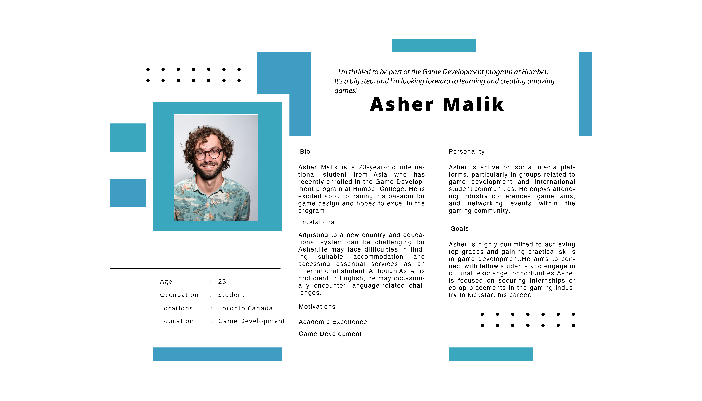
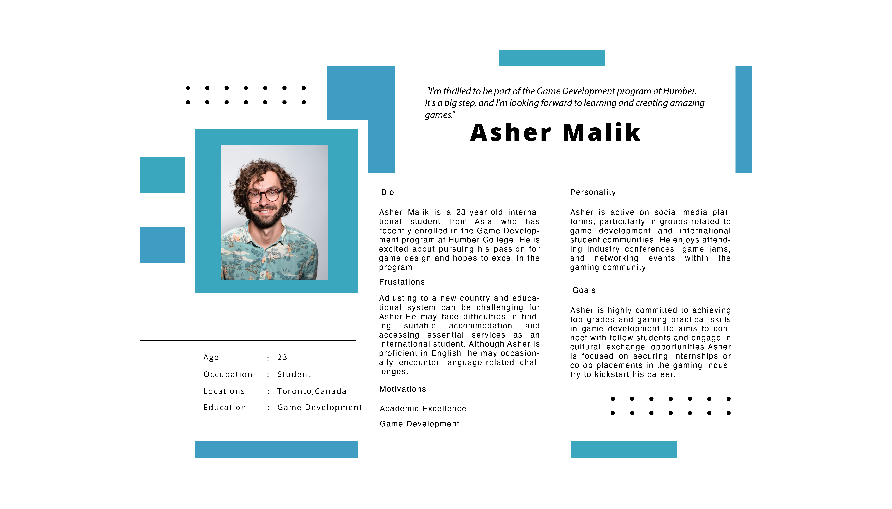
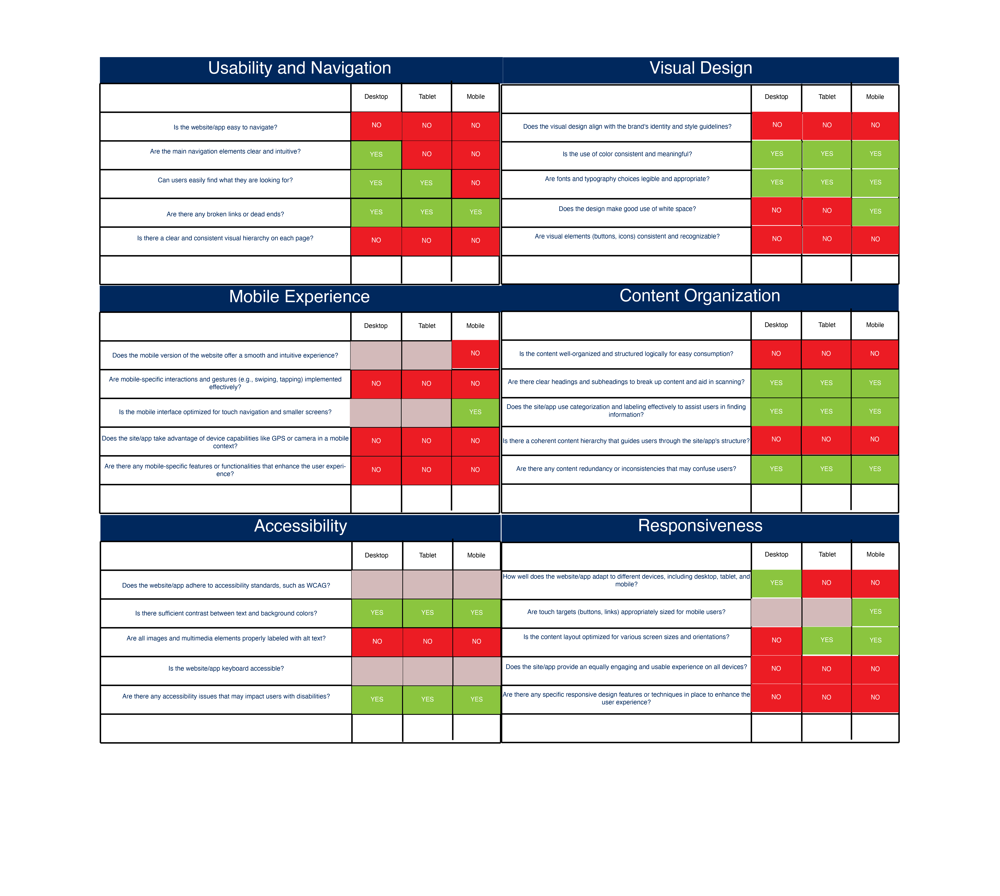
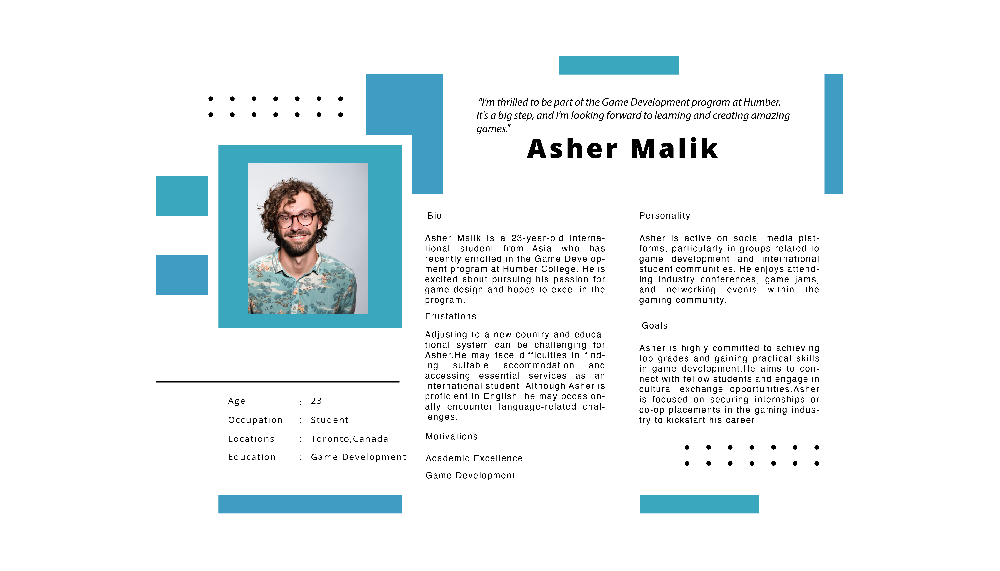
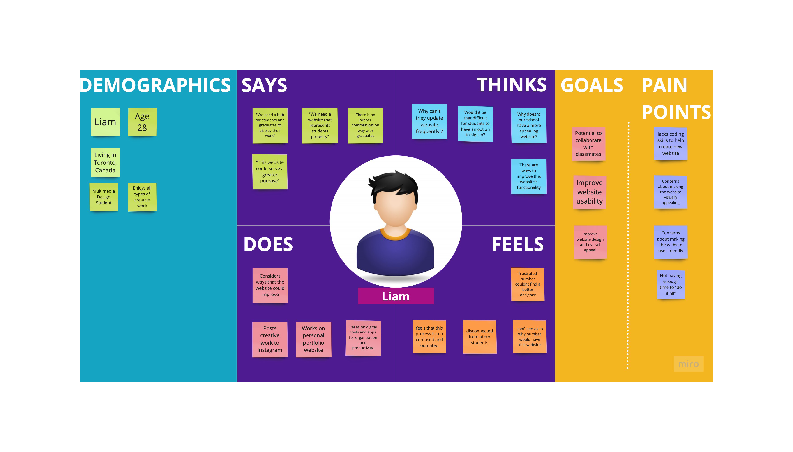
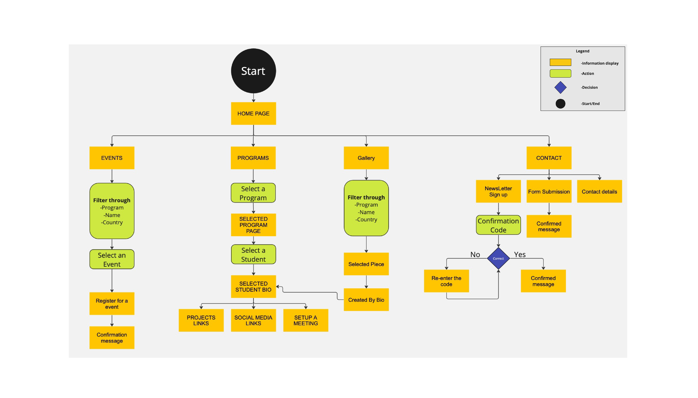
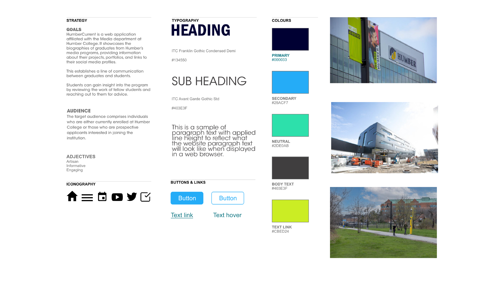
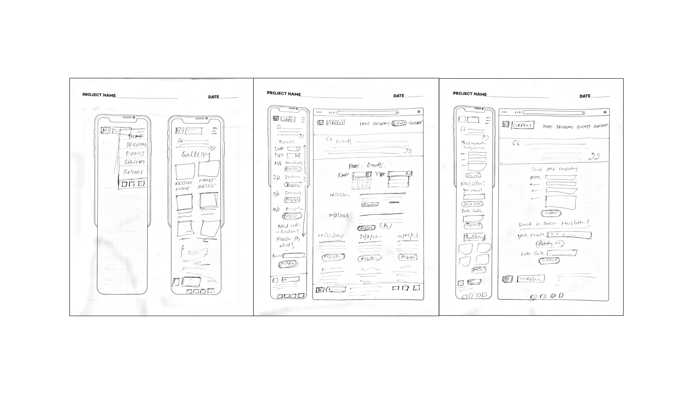

Redesigning HumberCurrent Website

I revamped the Humbercurrent website, ensuring responsiveness across both mobile and desktop platforms. This transformation followed a comprehensive audit of the existing website, utilizing design tools such as Figma, Illustrator, and Miro.
Tools : Figma,Miro,Illustrator
I was presented with two options for redesigning a website as part of my academic project: the MyHumber Website and the HumberCurrent website. I opted for the HumberCurrent website due to a personal connection. Upon receiving my visa approval, I attempted to connect with individuals in my related programs from my country or state. After an extensive search, I discovered this webpage; however, it had several inconveniences that I couldn't discern technically at that time. Now, I have the opportunity to delve deeper, identify areas for improvement, and enhance the website to the best of my abilities.
Humber college students / applicants
Diverse demographic students
Ages in between 17-40
Mostly tech-savvy people
LinkedIn
Instagram
Spotify
Coursera and more..

Previous events are still accessible and have not been concealed. However, the links associated with them are no longer functional.
Lack of uniformity in the buttons.
Lack of visual cues for program names when utilizing hover effects.
Website loading time is too longer.
At some sections ‘read more’ buttons are not working.
No brand identity in Home page banner
Students cannot set up a virtual meeting with graduates.
The user is unable to locate the contact information for the program coordinator and other officials on the program section page.
Redesign the UI elements/some pages.
Change the placement of sections
Change copy at some places
Change stock photos/graphic designs
Adding meeting session feature.
 

The previous logo failed to communicate its association with Humber.
The previous logo did not align with the established visual identity of the brand.


Feedback suggested considering a different shade of green for the meeting booking confirmation and a preference for a greener logo.
A recommendation was made to relocate the section description on the meeting response page, but the decision was made to keep it in its current position for essential information visibility.
To facilitate seamless switching between student and program pages, an address bar was introduced, ensuring users maintain clear awareness of their location.
The necessity of a header cover element, initially not part of the high-fidelity prototype, was questioned, leading to add again.


The Humber College Institute of Technology & Advanced Learning, commonly known as Humber College, is a public College of Applied Arts and Technology in Toronto, Ontario, Canada. Founded in 1967.
Original Website
https://mediaarts.humber.ca/humbercurrent/
Current is a festival of arts, media and design showcasing graduating students from Humber College’s Faculty of Media & Creative Arts.
Featuring live and recorded performances, screenings, exhib-
its, networking events, and port- folio shows, Current celebrates the ingenuity and professionalism of an electric group of storytell- ers.
Target Audience
Resource : https://humber.ca/today/sites/default/files/uploads/documents/humbercollegebackgrounder.pdf
Apps used by Target Audience
UX Audit
Findings
Pain points
Design Challenge
How might we design a more user friendly, consistent visual flow website for this product. How might we establish effective communication between students and graduates?Possible solutions
Creative Process
User Persona

Logo Changes
Reasons
Empathy Map
User Flow
Style Tile
Sketches

UI Kit
Mid Fidelity Prototype
Figma Prototype Links
Usability Testing
After testing I have done these changes.
High Fidelity Prototype